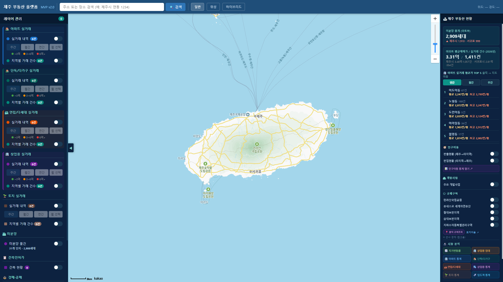
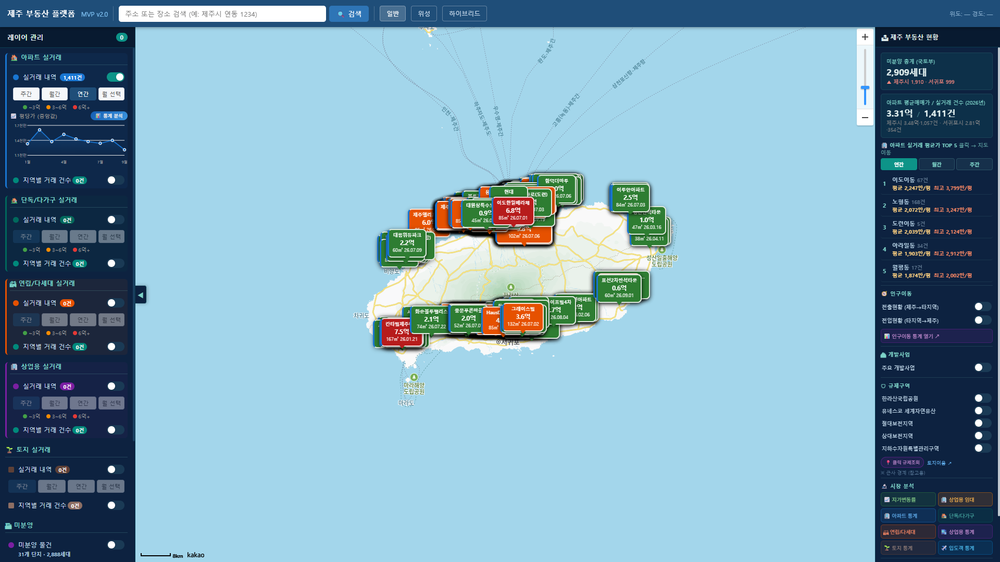
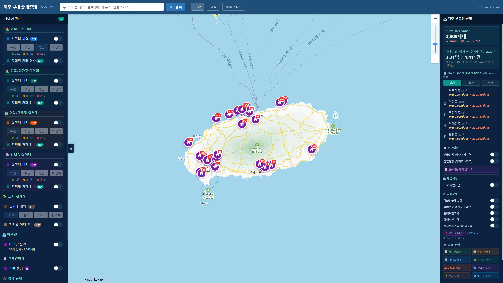
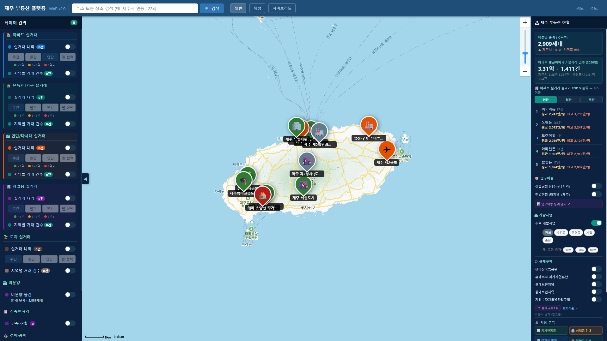
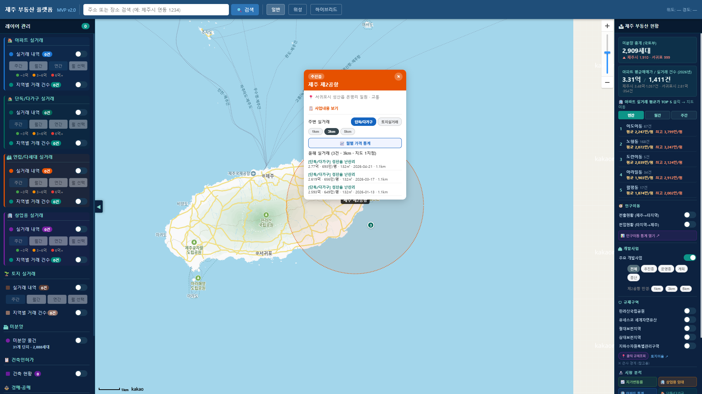
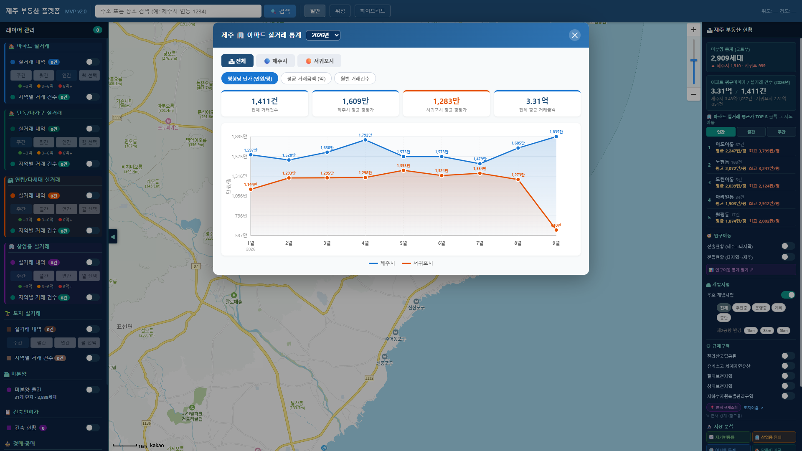

MVP v2.0 · 일반 사용자용 · 플랫폼 바로가기 · Markdown 버전
브라우저에서 플랫폼에 접속하면 입장 화면이 나타납니다. 「플랫폼 입장 →」을 누르면 지도로 들어갑니다.
그림 1. 입장 화면

그림 2. 메인 화면 (상단 검색 · 왼쪽 레이어 · 지도 · 오른쪽 현황)
| 위치 | 이름 | 역할 |
|---|---|---|
| 위 | 상단 바 | 검색, 일반/위성/하이브리드 지도 |
| 왼쪽 | 레이어 관리 | 실거래·미분양·인허가 등 ON/OFF |
| 가운데 | 지도 | 선택한 정보 표시 |
| 오른쪽 | 제주 부동산 현황 | 요약, TOP5, 개발·규제·시장 분석 |

그림 3. 아파트 실거래(연간) 표시 예시
단독/다가구 · 연립/다세대 · 상업용 · 토지도 같은 방식으로 켭니다. 토지는 지목(대지/전·답/임야 등) 필터를 추가로 쓸 수 있습니다.
왼쪽 미분양 → 미분양 물건을 켜면 단지 위치가 표시됩니다. 마커를 눌러 세대 수·분양가 등을 확인하세요.

그림 4. 미분양 레이어
오른쪽 개발사업 → 주요 개발사업을 켭니다. 상태(추진중/운영중 등)로 걸러볼 수 있습니다.

그림 5. 개발사업 마커
사업 핀을 클릭하면 상세 팝업이 열립니다. 1·3·5km로 반경을 바꾸면 아래 목록·통계·지도 원이 함께 바뀝니다.

그림 6. 개발사업 팝업 (주변 실거래)
오른쪽에서 국립공원·유네스코·보전지역 등을 켤 수 있습니다. 클릭 규제조회 후 지도를 누르면 근사 안내가 나옵니다. 정확한 확인은 토지이음 등을 이용하세요.
오른쪽 시장 분석 버튼 또는 왼쪽 통계 분석으로 통계 창을 엽니다.

그림 7. 아파트 실거래 통계
상단에 주소·장소명을 입력하고 검색을 누르면 해당 위치로 이동합니다.
| 항목 | 안내 |
|---|---|
| 실거래 | 국토부 공개 자료 기반. 공개 지연이 있을 수 있음. |
| 주간 기간 | 최근 7일만 표시 → 건수가 적어 보일 수 있음. 연간으로 전환. |
| 규제구역 | 참고용 근사 경계. |
Q. 거래가 안 보여요.
실거래 스위치 ON + 기간을 연간으로 바꿔 보세요.
Q. 팝업이 지도를 가려요.
상단 헤더를 드래그해 옮기세요.
Q. 건수는 많은데 점이 적어요.
같은 좌표에 여러 건이 겹치면 점으로 합쳐 보입니다.